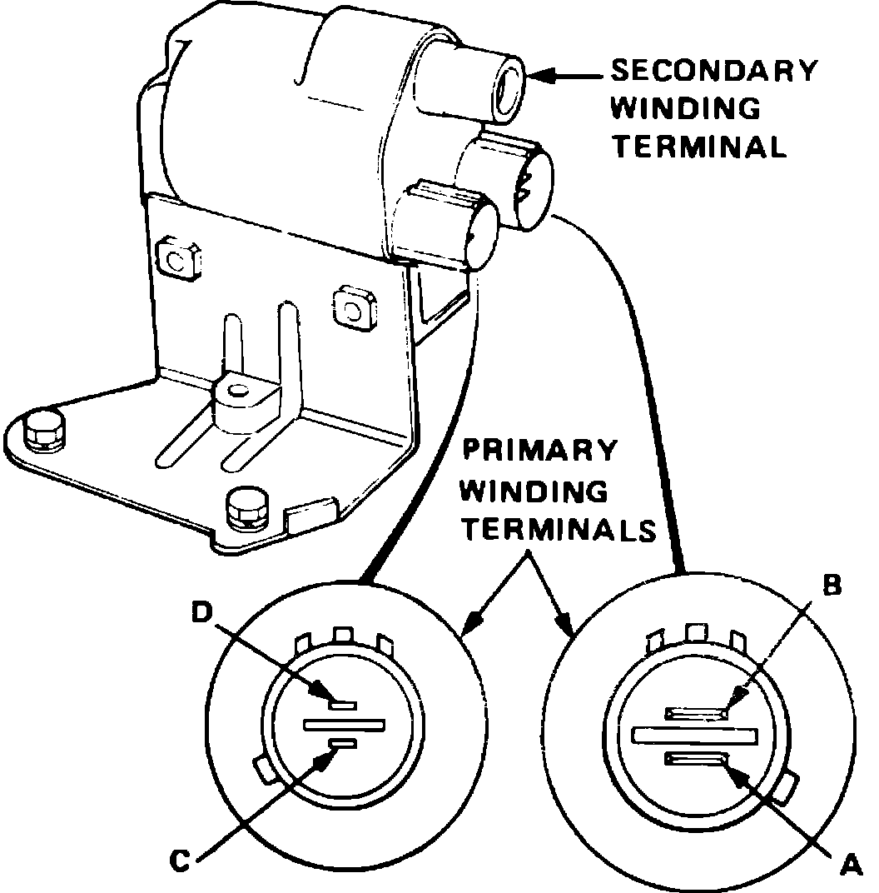

Ignition Coil: Testing and Inspection
Fig. 9 Ignition Coil Terminal Identification:

The following tests should be performed with ignition coil at room temperature.
1. With ignition switch Off, disconnect primary connectors and coil wire from ignition coil.
2. Using a suitable ohmmeter, measure resistance between terminals of coil as follows:
a. Check resistance between terminals A and D of primary windings, Fig. 9. Resistance should be 1.2-1.5 ohms (.3-.4 ohms on Legend models).
b. Check resistance between terminal A of primary windings and secondary winding terminal. Resistance should be 9,040-13,560 ohms.
c. Check resistance between terminals B and D of primary windings. Resistance should be approximately 2,200 ohms.
3. If resistance values in step 2 are not as specified, replace coil.